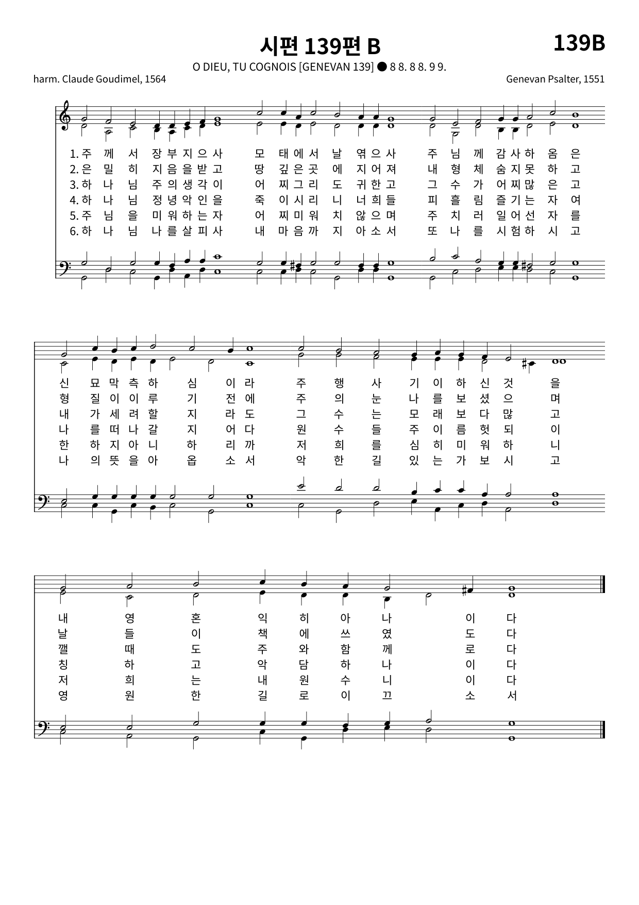

Psalm 139B
O DIEU, TU COGNOIS [GENEVAN 139] · 8 8. 8 8. 9 9.
English title: O LORD My God, Thou Searchest Me
Tune: Genevan Psalter, 1551 · Harmony: Claude Goudimel, 1564 · Lyrics: Korean adaptation of Psalm 139 from the Korean Revised Version (AI draft adaptation · not yet theologically reviewed) · 6 stanzas
Psalm 139 is divided into 2 tunes: A B · This tune contains stanzas 5–10 of the Psalm 139 lyrics.
Score PDF MusicXML (for printing) MusicXML (for accompaniment, with prelude and repeats) Read Psalm 139 (Korean Revised Version)
Score
← Psalm 139A ListAccompaniment (in preparation)Psalm 140A →
Lyrics (Korean)
Stanza 1
주께서 장부 지으사
모태에서 날 엮으사
주님께 감사하옴은
신묘막측하심이라
주 행사 기이하신 것을
내 영혼 익히 아나이다
주께서 장부 지으사
모태에서 날 엮으사
주님께 감사하옴은
신묘막측하심이라
주 행사 기이하신 것을
내 영혼 익히 아나이다
Stanza 2
은밀히 지음을 받고
땅 깊은 곳에 지어져
내 형체 숨지 못하고
형질이 이루기 전에
주의 눈 나를 보셨으며
날들이 책에 쓰였도다
은밀히 지음을 받고
땅 깊은 곳에 지어져
내 형체 숨지 못하고
형질이 이루기 전에
주의 눈 나를 보셨으며
날들이 책에 쓰였도다
Stanza 3
하나님 주의 생각이
어찌 그리도 귀한고
그 수가 어찌 많은고
내가 세려 할지라도
그 수는 모래보다 많고
깰 때도 주와 함께로다
하나님 주의 생각이
어찌 그리도 귀한고
그 수가 어찌 많은고
내가 세려 할지라도
그 수는 모래보다 많고
깰 때도 주와 함께로다
Stanza 4
하나님 정녕 악인을
죽이시리니 너희들
피 흘림 즐기는 자여
나를 떠나갈지어다
원수들 주 이름 헛되이
칭하고 악담하나이다
하나님 정녕 악인을
죽이시리니 너희들
피 흘림 즐기는 자여
나를 떠나갈지어다
원수들 주 이름 헛되이
칭하고 악담하나이다
Stanza 5
주님을 미워하는 자
어찌 미워치 않으며
주 치러 일어선 자를
한하지 아니하리까
저희를 심히 미워하니
저희는 내 원수니이다
주님을 미워하는 자
어찌 미워치 않으며
주 치러 일어선 자를
한하지 아니하리까
저희를 심히 미워하니
저희는 내 원수니이다
Stanza 6
하나님 나를 살피사
내 마음까지 아소서
또 나를 시험하시고
나의 뜻을 아옵소서
악한 길 있는가 보시고
영원한 길로 이끄소서
하나님 나를 살피사
내 마음까지 아소서
또 나를 시험하시고
나의 뜻을 아옵소서
악한 길 있는가 보시고
영원한 길로 이끄소서